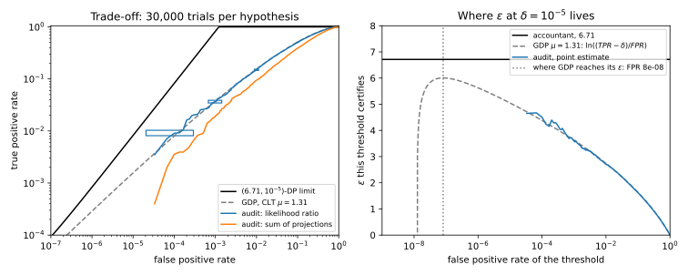
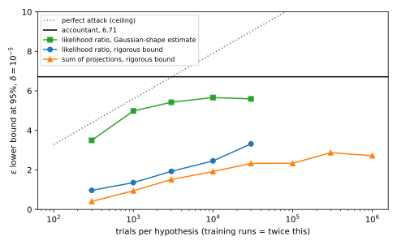

45 Auditing private training
45.1 Why this matters
Every chapter of this part ended with a number: train with stochastic gradient descent (SGD) under differential privacy (DP), that is, with per-example clipping and Gaussian noise (DP-SGD), at sampling rate \(q = 0.01\), noise multiplier \(\sigma = 1\) and 10,000 steps, and the accountant reports \(\varepsilon = 6.71\) at \(\delta = 10^{-5}\). That number is the conclusion of a proof. The proof is about an algorithm on paper, and what ships is code. Between the two sit a dozen places where an implementation can quietly differ from the algorithm the proof analysed: noise scaled for the averaged gradient but added to the sum, the wrong dataset size handed to the accountant, batches sampled one way and accounted another, a random seed reused. None of these changes the accuracy much, so none is caught by the usual tests. Is the trained model as private as the accountant says?
An audit answers this the only way an empirical check can: it attacks. It plants records of its own, canaries, trains with and without them, runs a membership test, and counts how often the test is right. The definition of DP limits how often any test can be right, so the measured error rates imply a lower bound on \(\varepsilon\): the algorithm cannot be private with any smaller \(\varepsilon\). A lower bound cannot prove privacy. It can disprove a claim, when it lands above the claimed value, and it says how much of the accountant’s worst case a given attacker can actually realize.
45.1.1 The one idea: privacy caps every test, so a measured test bounds privacy from below
An \((\varepsilon, \delta)\)-DP algorithm guarantees that every test, for every pair of neighbouring datasets, has a true positive rate (TPR) of at most \(e^\varepsilon\) times its false positive rate (FPR) plus \(\delta\). Read backwards, a test with a measured FPR and TPR forces \(\varepsilon \ge \ln\frac{\mathrm{TPR} - \delta}{\mathrm{FPR}}\). Everything in this chapter is about making that inequality bite. The rates are estimated from a finite number of trials, so they come with confidence intervals, and the bound must use the pessimistic end of each; this caps what any audit with \(n\) trials can certify at about \(\ln n\). The test is only as strong as the attack, so the auditor chooses the most detectable canary and the most informative view of training; with the right canary and a view of every step, the audit faces exactly the pair of distributions the accountant analyses. And training thousands of models is unaffordable, so two tricks get many trials out of one or two runs: many canaries in one run, or one observation per step.
Table 45.1 lists the results and where each is used.
| Result | Where it is used |
|---|---|
| A test’s FPR and TPR, with Clopper–Pearson intervals, give an \(\varepsilon\) lower bound | Every audit; reading audit results in papers |
| The ceiling: \(n\) trials certify at most about \(\ln(n/\ln(2/\beta))\) | Planning an audit; why audits of large \(\varepsilon\) are expensive |
| A Dirac canary seen at every step faces exactly the accountant’s pair | Strongest audits of DP-SGD; testing implementations |
| The likelihood-ratio statistic, and what the sum of projections loses | Choosing the attack’s score |
| Where \(\varepsilon\) at \(\delta = 10^{-5}\) lives on the trade-off curve | Why audits stop short of the accountant |
| One-run auditing: correct guesses are dominated by a binomial | Auditing real training runs |
| Black-box audits with input canaries | What a realistic attacker learns from a released model |
| Per-step and end-to-end audits find bugs | Testing DP-SGD implementations before release |
Notation. The training algorithm is \(M\), the dataset without the canary \(D\) and with it \(D' = D \cup \{c\}\); neighbours differ by adding or removing one record. A trial is one run of \(M\) on \(D\) or on \(D'\), with fresh randomness, followed by the attack’s score \(s\). The attack says “canary in” when \(s \ge \tau\), a threshold. Its false positive rate is \(\mathrm{FPR} = \Pr[s \ge \tau \mid D]\) and its true positive rate \(\mathrm{TPR} = \Pr[s \ge \tau \mid D']\); the false negative rate (FNR) is \(1 - \mathrm{TPR}\). With \(n\) trials of each kind, the counts are \(k_0\) false positives and \(k_1\) true positives. \(\beta\) is the probability that an audit’s bound is wrong (5% throughout), and \(\varepsilon_{\mathrm{lo}}\) is the bound itself. DP-SGD’s notation is that of DP-SGD: clipping norm \(C\), noise multiplier \(\sigma\), sampling rate \(q\), expected batch size \(B\) (the sampling rate times the number of records, 100 here), step size \(\eta\) and \(T\) steps. In this chapter \(n\) always counts trials, not records.
The running example. The part’s network: a two-layer tanh network trained on the 10,000 records of DP-SGD with \(q = 0.01\), \(C = 0.5\), \(\sigma = 1\), step size 0.5 and \(T = 10{,}000\) steps. The Rényi differential privacy (RDP) accountant reports \(\varepsilon = 6.71\) at \(\delta = 10^{-5}\); this is the claim every audit below tests.
How to read this chapter. Read the toolkit and Section 45.3, which turns an attack into a bound and says what it costs. Section 45.4 chooses the attack, Section 45.5 runs the strongest one many times and explains why even it stops short of 6.71. Section 45.6 and Section 45.7 audit a real training run in one go, and Section 45.8 uses audits to catch broken implementations. This chapter comes last in the part because it checks the claims of all the others.
45.2 Toolkit: four facts every derivation uses
45.2.1 Fact 1 — Differential privacy caps every test, in both directions
\(M\) is \((\varepsilon, \delta)\)-DP when, for all neighbours \(D, D'\) and every set of outputs \(S\), \(\Pr[M(D') \in S] \le e^\varepsilon\Pr[M(D) \in S] + \delta\), and the same with \(D\) and \(D'\) swapped. A test that says “canary in” on the event \(S\) has \(\mathrm{TPR} = \Pr[M(D') \in S]\) and \(\mathrm{FPR} = \Pr[M(D) \in S]\), so the definition reads \(\mathrm{TPR} \le e^\varepsilon\,\mathrm{FPR} + \delta\). Applying the definition with the roles swapped to the complement of \(S\), where the test says “canary out”, gives \(1 - \mathrm{FPR} \le e^\varepsilon(1 - \mathrm{TPR}) + \delta\): a test cannot be almost always right about absent canaries while rarely missing present ones. Together, \[\mathrm{TPR} \le e^\varepsilon\,\mathrm{FPR} + \delta, \qquad 1 - \mathrm{FPR} \le e^\varepsilon\,(1 - \mathrm{TPR}) + \delta. \tag{45.1}\] These are the two lines of the hypothesis-testing interpretation of DP (The definition of differential privacy); they hold for randomized tests too.
45.2.2 Fact 2 — Clopper–Pearson bounds on a rate
If \(k\) of \(n\) independent trials succeed, each with unknown probability \(p\), then \(k\) is binomial, \(\mathrm{Bin}(n, p)\). The one-sided Clopper–Pearson upper bound at level \(a\) is the rate \(u\) at which seeing \(k\) or fewer successes has probability exactly \(a\), \(\Pr[\mathrm{Bin}(n, u) \le k] = a\); the lower bound \(l\) solves \(\Pr[\mathrm{Bin}(n, l) \ge k] = a\). Then \(\Pr[p \le u] \ge 1 - a\) and \(\Pr[p \ge l] \ge 1 - a\), for every true \(p\). The reason is that a true rate above \(u\) would make the observed count implausibly small, and the probability of an observation that implausible is at most \(a\) (Hypothesis testing proves it). With \(k = 10\) and \(n = 10{,}000\), the bounds at \(a = 0.025\) are 0.00048 and 0.00184, the two ends of the usual two-sided 95% interval. With \(k = 0\) and \(n = 3{,}000\), the 95% upper bound is \(9.9808 \times 10^{-4}\), about \(3/n\): the rule of three.
45.2.3 Fact 3 — The best test thresholds the likelihood ratio
Among all tests with a given FPR, the one with the largest TPR says “canary in” when the likelihood ratio, the density of the observation under \(D'\) divided by its density under \(D\), exceeds a threshold. This is the Neyman–Pearson lemma (Hypothesis testing). The reason is a budgeting argument: each observation costs its probability under \(D\) in false positives and earns its probability under \(D'\) in true positives, and the best way to spend a fixed false-positive budget is on the observations with the best ratio of earnings to cost. The curve of the best TPR against FPR is the pair’s trade-off curve (written as best FNR against FPR in f-DP and Gaussian DP). For two unit-variance normals at distance \(\mu\), the best TPR at FPR \(a\) is \[\mathrm{TPR}_\mu(a) = 1 - \Phi\big(\Phi^{-1}(1 - a) - \mu\big), \tag{45.2}\] where \(\Phi\) is the standard normal distribution function; a mechanism whose curve is this one, or better, satisfies Gaussian differential privacy (GDP) with parameter \(\mu\), or \(\mu\)-GDP.
45.2.4 Fact 4 — One DP-SGD step, seen along one direction
A DP-SGD step releases \(G_t = \sum_{i\in S_t}\bar g_i + \xi_t\), the sum of the clipped gradients of the records in the batch \(S_t\) plus Gaussian noise \(\xi_t \sim \mathcal N(0, \sigma^2C^2I)\). Project \(G_t\) on a fixed unit vector \(u\) and divide by \(C\). The noise becomes \(\sigma z_t\) with \(z_t\) standard normal, because the projection of an isotropic Gaussian vector on a unit vector is a one-dimensional Gaussian with the same standard deviation. A record whose clipped gradient is exactly \(Cu\) adds 1 when it is sampled, which under Poisson sampling happens with probability \(q\), independently at every step. So if no other record’s gradient has a component along \(u\), the projection is \[x_t \sim \mathcal N(0, \sigma^2) \text{ without the record}, \qquad x_t \sim (1 - q)\,\mathcal N(0, \sigma^2) + q\,\mathcal N(1, \sigma^2) \text{ with it}, \tag{45.3}\] independently over steps, because both the sampling and the noise are drawn afresh at every step. This is the pair of distributions the accountant of Amplification by subsampling analyses: the worst case for one step under add/remove neighbours.
45.3 From an attack to a lower bound on ε
45.3.1 Context
You ran an attack: \(n\) training runs without the canary and \(n\) with it, a score per run, a threshold. You counted \(k_0\) false positives and \(k_1\) true positives. What can you conclude about \(\varepsilon\), with what confidence, and how much could you possibly conclude with \(n\) trials?
45.3.2 Statement
The measured rates are \(k_0/n\) and \(k_1/n\). Write \(\bar\alpha\) and \(\underline\tau\) for the one-sided Clopper–Pearson upper bound on the FPR and lower bound on the TPR, each at level \(\beta/2\) (Fact 2). If the threshold was chosen without looking at these \(2n\) trials, then with probability at least \(1 - \beta\) the algorithm is not \((\varepsilon, \delta)\)-DP for any \(\varepsilon\) below \[\varepsilon_{\mathrm{lo}} = \max\Big\{\ln\frac{\underline\tau - \delta}{\bar\alpha},\ \ln\frac{1 - \bar\alpha - \delta}{1 - \underline\tau}\Big\}. \tag{45.4}\] The most that \(n\) trials per hypothesis can certify is the bound of a perfect attack, \(k_0 = 0\) and \(k_1 = n\): \[\varepsilon_{\max}(n) = \ln\frac{(\beta/2)^{1/n} - \delta}{1 - (\beta/2)^{1/n}} \approx \ln\frac{n}{\ln(2/\beta)}. \tag{45.5}\]
45.3.3 Derivation
- The rates bound \(\varepsilon\). Solve the two inequalities of Equation 45.1 for \(\varepsilon\): \(e^\varepsilon \ge (\mathrm{TPR} - \delta)/\mathrm{FPR}\) and \(e^\varepsilon \ge (1 - \mathrm{FPR} - \delta)/(1 - \mathrm{TPR})\). Any \((\varepsilon, \delta)\)-DP algorithm satisfies both, at the true rates of every test.
- Both expressions grow with the TPR and shrink with the FPR. So replacing the true FPR by something larger and the true TPR by something smaller can only lower them.
- The intervals hold together with probability \(1 - \beta\). By Fact 2, \(\mathrm{FPR} \le \bar\alpha\) fails with probability at most \(\beta/2\), and \(\mathrm{TPR} \ge \underline\tau\) fails with probability at most \(\beta/2\). The probability that at least one of them fails is at most the sum, \(\beta\) (the union bound). This needs the counts to be binomial: independent trials, and a threshold fixed before the counting.
- Combine. On the event that both intervals hold, step 2 gives \(\varepsilon_{\mathrm{lo}} \le \max\{\ln\frac{\mathrm{TPR} - \delta}{\mathrm{FPR}}, \ln\frac{1 - \mathrm{FPR} - \delta}{1 - \mathrm{TPR}}\}\), and step 1 says this is at most the \(\varepsilon\) of any valid guarantee. So the event “\(M\) is \((\varepsilon, \delta)\)-DP with \(\varepsilon < \varepsilon_{\mathrm{lo}}\)” has probability at most \(\beta\).
- The ceiling. With \(k_0 = 0\), \(\Pr[\mathrm{Bin}(n, u) \le 0] = (1 - u)^n = \beta/2\) gives \(\bar\alpha = 1 - (\beta/2)^{1/n}\). With \(k_1 = n\), \(\Pr[\mathrm{Bin}(n, l) \ge n] = l^n = \beta/2\) gives \(\underline\tau = (\beta/2)^{1/n}\). Substituting in the first form of Equation 45.4 gives Equation 45.5; the second form gives the same value here. For large \(n\), \((\beta/2)^{1/n} = e^{-\ln(2/\beta)/n} \approx 1 - \ln(2/\beta)/n\), so \(\bar\alpha \approx \ln(2/\beta)/n\), \(\underline\tau \approx 1\) and \(\varepsilon_{\max} \approx \ln(n/\ln(2/\beta))\); with \(\beta = 0.05\), \(\ln(2/\beta) = \ln 40 = 3.69\).
45.3.4 Interpretation
A lower bound, and only that. \(\varepsilon_{\mathrm{lo}}\) says “no smaller \(\varepsilon\) is possible”, never “this \(\varepsilon\) is enough”. A weak attack gives a small \(\varepsilon_{\mathrm{lo}}\) for a leaky model as easily as for a private one. That asymmetry is the whole logic of auditing: a bound above the claim refutes the claim, and a bound below it only says that this attacker, on this canary, could not do better.
The ceiling grows like \(\ln n\). Each factor of \(e\) in the bound costs a factor of \(e\) in trials, because a false positive rate of \(\alpha\) cannot be distinguished from zero with fewer than about \(3/\alpha\) trials (the rule of three), and \(\varepsilon\) is about \(\ln(1/\alpha)\) when the TPR is near 1. Table 45.2 shows what that means. Certifying the running example’s 6.71 needs at least 3,038 trials per hypothesis, so 6,076 training runs, even for an attack that never errs. Each run of the running example takes a few seconds; for a real network each is a full training job.
| Trials per hypothesis \(n\) | 100 | 1,000 | 10,000 | 100,000 | 1,000,000 |
|---|---|---|---|---|---|
| Largest certifiable \(\varepsilon\), Equation 45.5 | 3.28 | 5.60 | 7.90 | 10.21 | 12.51 |
Choose the threshold on separate trials. Step 3 assumes the threshold does not depend on the counts. Sweeping the threshold over the same data and reporting the best bound is the norm in parts of the literature, and it makes the confidence level wrong: among many thresholds, one is lucky. Every audit in this chapter chooses its threshold on half of the trials and counts on the other half.
Both inequalities matter. The first form of Equation 45.4 rewards tests that flag few absent canaries; the second rewards tests that rarely miss present ones. A test that says “canary in” almost always, with FPR 0.5 and TPR 0.999, has a useless first form, \(\ln(0.999/0.5) = 0.69\), and a second form of \(\ln(0.5/0.001) = 6.21\). An audit should try both (Exercise 1).
45.3.5 Example: what confidence costs
Suppose 1,000 runs with the canary and 1,000 without give 500 true positives and 1 false positive. The point estimate is \(\ln\frac{0.5 - 10^{-5}}{0.001} = 6.21\). The Clopper–Pearson bounds at \(\beta/2 = 0.025\) are \(\bar\alpha = 0.00556\) and \(\underline\tau = 0.4685\): one false positive in 1,000 is consistent with a true FPR five times larger. The certified bound is \(\ln\frac{0.4685 - 10^{-5}}{0.00556} = 4.43\), almost two less than the point estimate. With ten times the trials and the same rates, 10 false positives and 5,000 true positives out of 10,000 each, \(\bar\alpha = 0.00184\), \(\underline\tau = 0.4902\), and the bound rises to 5.59. The point estimate does not change; the price of confidence falls, slowly, as the counts grow.
45.3.6 Check yourself
- An audit with 500 trials per hypothesis reports \(\varepsilon_{\mathrm{lo}} = 7\) at 95% confidence. What went wrong? (500 trials can certify at most about \(\ln(500/3.69) = 4.9\), by Equation 45.5. The threshold was probably chosen on the same trials, or the trials were not independent.)
- Why does the bound use the upper end of the FPR interval and the lower end of the TPR interval? (Because the bound must hold whatever the true rates are within their intervals, and \(\ln\frac{\mathrm{TPR} - \delta}{\mathrm{FPR}}\) is smallest when the FPR is as large and the TPR as small as the data allow.)
45.4 Canaries and threat models
45.4.1 Context
DP is a promise about the worst pair of neighbouring datasets and the worst test. An audit must instantiate both: it picks the dataset, the canary record and what the attacker sees, then the score. A typical training record and a loss threshold give a valid but nearly useless bound (Membership inference shows that most records are barely exposed). What is the strongest audit of DP-SGD, and what does it face?
45.4.2 Statement
The auditor has two choices of canary and two threat models.
An input-space canary is a record \((x, y)\), inserted into the training data like any other: a mislabeled example, or one far from the data, so that its gradient is large and points where few others do. A gradient-space canary lets the auditor write the canary’s gradient directly, as if it controlled the training code; the strongest is a Dirac canary, a gradient equal to \(C\) on one coordinate and zero elsewhere (Nasr et al. 2023), on a coordinate where the other records’ gradients are zero. In the black-box threat model the attacker sees only the final model; in the white-box model it sees every iterate \(w_0, \dots, w_T\), and therefore every noisy sum \(G_t = -B(w_{t+1} - w_t)/\eta\).
For a Dirac canary seen white-box, the audit faces the accountant’s pair exactly. The projections \(x_t = G_{t,j}/C\) on the canary’s coordinate \(j\) follow Equation 45.3, independently over the \(T\) steps. The most powerful test at every FPR thresholds the likelihood-ratio statistic \[\Lambda = \sum_{t=1}^T\ln\Big(1 - q + q\,e^{(x_t - 1/2)/\sigma^2}\Big), \tag{45.6}\] and by the central limit theorem (CLT) its trade-off curve is close to that of \(\mu\)-GDP with \(\mu = q\sqrt{T(e^{1/\sigma^2} - 1)}\). The simpler sum of projections \(\sum_tx_t\), which is the canary coordinate of the total displacement \(w_0 - w_T\) times \(B/(\eta C)\), has a curve close to \(\mu\)-GDP with \(\mu_{\mathrm{sum}} = q\sqrt T/\sigma\).
45.4.3 Derivation
- The canary is the only difference. With a Dirac canary on a coordinate \(j\) no other record’s gradient touches, every other record contributes 0 to \(G_{t,j}\). The canary’s clipped gradient is itself, since its norm is exactly \(C\), and it contributes \(C\) when sampled. Dividing by \(C\) gives Fact 4: \(x_t = \sigma z_t\) without the canary and \(\sigma z_t + b_t\) with it, \(b_t \sim \mathrm{Bernoulli}(q)\).
- The steps are independent. The sampling coin \(b_t\) and the noise \(z_t\) are fresh at each step, and the canary’s gradient is the same at every step whatever the weights are. So \((x_1, \dots, x_T)\) are independent and identically distributed under each hypothesis, even though training is adaptive.
- The likelihood ratio of one step. The density of \(\mathcal N(1, \sigma^2)\) divided by that of \(\mathcal N(0, \sigma^2)\) at \(x\) is \(e^{(2x - 1)/(2\sigma^2)} = e^{(x - 1/2)/\sigma^2}\), because the squares \(x^2\) cancel in the ratio of the two exponentials. The mixture’s density over the null’s is therefore \((1 - q) + q\,e^{(x - 1/2)/\sigma^2}\).
- Multiply over steps. Independence (step 2) makes the joint likelihood ratio a product, and its logarithm the sum Equation 45.6. By Fact 3, thresholding \(\Lambda\) is the most powerful test at every FPR. No attacker, whatever it sees, can do better against this canary: the whole training run is a function of the projections \(x_t\) and of randomness that has the same distribution under both hypotheses (the other records’ sampling and the noise on the other coordinates), so it carries no evidence beyond the \(x_t\).
- The two statistics in Gaussian terms. The CLT applied to the per-step privacy loss gives \(\mu = q\sqrt{T(e^{1/\sigma^2} - 1)}\) for \(\Lambda\) (f-DP and Gaussian DP derives it from the mean and variance of \(\ln(1 + qW)\), with \(W = e^{(x - 1/2)/\sigma^2} - 1\)). For the sum, the shift between the hypotheses is the expected number of times the canary is sampled, \(qT\), and the noise standard deviation is \(\sigma\sqrt T\); their ratio is \(q\sqrt T/\sigma\). (With the canary the sum has a little extra variance, \(Tq(1 - q)\), from the random number of samples.)
45.4.4 Interpretation
Why the likelihood ratio beats the sum. The sum treats every step alike. The likelihood ratio does not: a step with \(x_t = 3\) is much stronger evidence of the canary than three steps with \(x_t = 1\), because a value three noise standard deviations out is very unlikely without the canary. The exponential in Equation 45.6 weighs it accordingly. The two coincide when \(\sigma\) is large, since then the exponential is nearly linear, and differ most at small \(\sigma\); the ratio of their \(\mu\) is \(\sigma\sqrt{e^{1/\sigma^2} - 1}\), 1.311 at \(\sigma = 1\) (Exercise 4).
Why black-box audits are weaker. Three things separate a black-box audit with an input canary from the white-box Dirac audit. The final model is one function of all the noisy sums, so it carries at most as much information as all of them (post-processing), and usually much less: the noise of 10,000 steps is summed into the weights, and later steps partly overwrite earlier ones. An input canary’s gradient is not of norm \(C\) at every step: once the model fits it, or gives up on it, its gradient shrinks or turns. And it shares directions with the other records’ gradients, whose contributions act as extra noise. Nasr, Song, Thakurta, Papernot & Carlini (2021) built a ladder of such adversaries for DP-SGD and found the lower bound tight for the strongest, which sees every iterate and chooses a worst-case dataset and canary, and much weaker as the adversary was restricted towards a realistic one. Jagielski, Ullman & Oprea (2020), an early audit of DP-SGD, used black-box poisoning canaries crafted to have large gradients in a direction where the other data’s gradients are small (their ClipBKD), with Clopper–Pearson intervals; they report bounds about ten times better than standard membership inference and within about a factor of ten of the theoretical \(\varepsilon\).
Which threat model to audit. They answer different questions. A white-box gradient audit tests the mechanism: it asks whether the code adds the noise and clips the gradients the proof assumes, and its bound should match the accountant. A black-box input audit tests the deployment: it measures what an attacker with a released model and a planted record can do. A gap between the black-box bound and the accountant is not a bug; it is a measure of how far this attacker is from the proof’s worst case.
45.4.5 Example: the running example’s two statistics
At \(q = 0.01\), \(\sigma = 1\) and \(T = 10{,}000\), the likelihood-ratio statistic has \(\mu = 0.01 \times \sqrt{10{,}000 \times 1.7183} = 1.3108\), and the sum of projections \(\mu_{\mathrm{sum}} = 0.01 \times 100 = 1.00\) (0.9951 with the extra variance). Read through the Gaussian privacy profile, the conversion from \(\mu\) to \(\varepsilon\) at a given \(\delta\) (f-DP and Gaussian DP), these are \(\varepsilon = 6.01\) and \(4.35\) at \(\delta = 10^{-5}\). Choosing the sum lowers \(\mu\) from 1.31 to 1.00, and the \(\varepsilon\) the audit can ever reach from 6.01 to 4.35, before a single trial is run.
45.4.6 Check yourself
- Why must the Dirac canary sit on a coordinate the other records do not touch? (Otherwise their gradients add an unknown amount to \(x_t\), which acts as extra noise and as a bias that differs from step to step; the audit no longer faces Equation 45.3 but a harder problem, and its bound drops.)
- An attacker sees only \(w_0\) and \(w_T\) of a run with a Dirac canary. Which statistic can it compute, and what does it lose? (The total displacement on the canary coordinate, which is the sum of projections; it loses the per-step values, so it cannot weigh the large steps more, and its \(\mu\) falls from 1.31 to 1.00.)
45.5 Tight audits of the mechanism
45.5.1 Context
The white-box Dirac audit faces the accountant’s own pair. With enough trials, does it recover the accountant’s 6.71? With the trials an auditor can afford, how close does it get?
45.5.2 Statement
For any pair of distributions \(P\) (without the canary) and \(Q\) (with it), the smallest \(\varepsilon\) for which \(Q(S) \le e^\varepsilon P(S) + \delta\) holds for every event \(S\) is \[\varepsilon^*(\delta) = \sup_S\ \ln\frac{Q(S) - \delta}{P(S)}, \tag{45.7}\] the supremum over events with \(Q(S) > \delta\), and the supremum may be taken over likelihood-ratio thresholds only. For a \(\mu\)-GDP curve the supremum is reached at the threshold whose false positive rate is \[a^* = \Phi\Big(-\frac{\varepsilon}{\mu} - \frac{\mu}{2}\Big), \qquad \mathrm{TPR}^* = \Phi\Big(-\frac{\varepsilon}{\mu} + \frac{\mu}{2}\Big). \tag{45.8}\] For the running example, \(\mu = 1.3108\) and \(\varepsilon = 6.01\) give \(a^* = 8.1 \times 10^{-8}\) and \(\mathrm{TPR}^* = 4.3 \times 10^{-5}\): certifying the full \(\varepsilon\) at \(\delta = 10^{-5}\) needs to measure a false positive rate below one in ten million.
45.5.3 Derivation
- Equation 45.7 is the definition, solved for \(\varepsilon\). If \(\varepsilon\) is at least the supremum, then \(\ln\frac{Q(S) - \delta}{P(S)} \le \varepsilon\) for every \(S\), which rearranges to \(Q(S) \le e^\varepsilon P(S) + \delta\). If \(\varepsilon\) is below it, some event has \(\ln\frac{Q(S) - \delta}{P(S)} > \varepsilon\) and violates the inequality.
- Only likelihood-ratio thresholds matter. For a fixed \(P(S) = a\), the ratio grows with \(Q(S)\), and by Fact 3 the event with the largest \(Q(S)\) among those with \(P(S) = a\) is a likelihood-ratio threshold.
- So a perfect audit is exact. An audit that thresholds \(\Lambda\) (Equation 45.6) and measures FPR and TPR without error at every threshold computes Equation 45.7, the true \(\varepsilon^*(\delta)\) of the canary’s pair. For the Dirac canary this is the pair the accountant bounds, so the audit converges to DP-SGD’s true \(\varepsilon\) in this direction of neighbours.
- The touching point. For a \(\mu\)-GDP curve, the ratio \(\frac{\mathrm{TPR} - \delta}{\mathrm{FPR}}\) is largest where the line \(\mathrm{TPR} = e^\varepsilon\,\mathrm{FPR} + \delta\) touches the curve, that is where the curve’s slope is \(e^\varepsilon\). The slope of a trade-off curve at a threshold is the likelihood ratio there (Fact 3’s budgeting argument at the margin), which for two normals at distance \(\mu\) with threshold \(t\) is \(e^{\mu t - \mu^2/2}\). Setting it to \(e^\varepsilon\) gives \(t = \varepsilon/\mu + \mu/2\), whose FPR is \(1 - \Phi(t) = \Phi(-t)\) and TPR \(1 - \Phi(t - \mu)\): Equation 45.8.
45.5.4 Interpretation
The accountant’s number is not the audit’s target. The audit converges to the true \(\varepsilon^*\), not to what an accountant reports. The RDP accountant’s 6.71 is an upper bound, and a loose one: the numerical accountant of f-DP and Gaussian DP puts the true value of the running example between 6.14 and 6.24, and the CLT approximation gives 6.01. Even an audit with infinitely many trials stops about half a unit below 6.71. That gap belongs to the accountant, not to the audit.
\(\varepsilon\) at small \(\delta\) lives in the extreme tail. Equation 45.8 is the main reason audits fall short. With \(n\) trials you can measure false positive rates down to about \(3/n\); below that, the threshold admits no false positive and its rate is only bounded by the rule of three. At the rates you can measure, the curve’s ratio \(\mathrm{TPR}/\mathrm{FPR}\) is far below \(e^\varepsilon\). For \(\mu = 1.3108\) it is \(\ln(\mathrm{TPR}/\mathrm{FPR}) = 2.74\) at FPR \(10^{-2}\), 3.63 at \(10^{-3}\) and 4.38 at \(10^{-4}\), by Equation 45.2. Reaching 6 needs FPR near \(10^{-7}\), and about \(1.2\times10^{8}\) trials without the canary to see ten false positives there (Exercise 3). Figure 45.1 shows both sides: the measured trade-off curve sits well inside the \((6.71, 10^{-5})\) limit, and the \(\varepsilon\) each threshold certifies keeps rising until FPR \(10^{-7}\).
Assume the shape, and extrapolate. Nasr, Hayes, Steinke, Balle, Tramèr, Jagielski, Carlini & Terzis (2023) avoid the tail by assuming the trade-off curve has a known shape. If the mechanism is \(\mu\)-GDP for some \(\mu\), a single test bounds \(\mu\) from below: by Equation 45.2, \(\mathrm{TPR} \le \mathrm{TPR}_\mu(\mathrm{FPR})\) rearranges to \[\mu \ge \Phi^{-1}(\mathrm{TPR}) - \Phi^{-1}(\mathrm{FPR}), \tag{45.9}\] and a lower bound on \(\mu\) converts to a lower bound on \(\varepsilon\) through the Gaussian privacy profile. The rates can be measured at a moderate FPR, where trials are cheap, and the shape carries the bound into the tail. The statement “\(M\) is not \(\mu\)-GDP for any \(\mu\) below this” is rigorous; the conversion to \(\varepsilon\) is valid only if the curve really is Gaussian. For the subsampled Gaussian of DP-SGD it is not exactly: its tail is heavier, and the \(\mu\) that Equation 45.9 gives depends on where you read it. In the example below, the measured rates give 1.300 at FPR \(10^{-1}\), 1.303 at \(10^{-2}\), 1.371 at \(10^{-3}\) and 1.492 at \(2 \times 10^{-4}\), against the CLT’s 1.3108. Their audits mostly insert the canary at every step, so that each step is an exact Gaussian mechanism, and compose the per-step result with an accountant; Section 45.8 does the same.

45.5.5 Example: auditing the running example’s mechanism
The script simulates the white-box Dirac audit directly from Equation 45.3: each trial draws 10,000 projections, adds the canary on a \(\mathrm{Bin}(10{,}000, 0.01)\) number of steps when it is present, and computes \(\Lambda\). This is statistically identical to training the network with a Dirac canary on an untouched coordinate, and thousands of times cheaper.
With 50,000 trials per hypothesis, the measured curve is heavier-tailed than the Gaussian approximation. At the threshold that lets through 500 false positives (FPR \(10^{-2}\)) the TPR is 0.1530 and \(\ln((\mathrm{TPR} - \delta)/\mathrm{FPR}) = 2.73\), as the Gaussian predicts; at 10 false positives (FPR \(2.0 \times 10^{-4}\)) the TPR is 0.0203 and the point value 4.62, and at 5 false positives (FPR \(10^{-4}\)) it is 4.84, above the Gaussian’s 4.38. These are point estimates, without confidence intervals. Table 45.3 gives the certified bounds, each with the threshold chosen on the first half of the trials and the counts taken on the second.
| Trials per hypothesis | 1,000 | 3,000 | 10,000 | 50,000 |
|---|---|---|---|---|
| \(\varepsilon_{\mathrm{lo}}\), Equation 45.4 | 1.64 | 1.88 | 2.84 | 3.63 |
| \(\mu_{\mathrm{lo}}\), Equation 45.9 with Clopper–Pearson | 0.795 | 1.064 | 1.147 | 1.185 |
| \(\varepsilon\) of \(\mu_{\mathrm{lo}}\)-GDP (assumes the Gaussian shape) | 3.36 | 4.70 | 5.13 | 5.33 |
| Ceiling, Equation 45.5, at half the trials | 4.91 | 6.01 | 7.21 | 8.82 |
The rigorous bound reaches 3.63 with 100,000 simulated training runs, about half the claim. With 10,000 runs per hypothesis its threshold lets through 6 false positives among 5,000 and catches 254 of 5,000 canaries; with 50,000 it lets through 3 among 25,000 and catches 368. The Gaussian-shape estimate climbs faster, to 5.33, and approaches the CLT’s 6.01 from below. The sum of projections needs far more trials for less: its rigorous bound is 1.97 with 10,000 trials per hypothesis and 3.26 with 100,000. With 1,000,000 it is 2.27 in this run, lower than with 100,000, because a threshold chosen on 500,000 trials to let through a handful of false positives let through more on the other half. Bounds read in the far tail are noisy, and Figure 45.2 shows the same scatter. Every number in Table 45.3 is below the claim, as it must be for a correct implementation.

45.5.6 Check yourself
- A white-box audit with unlimited trials converges to 6.2, not 6.71. Is the implementation broken? (No. The audit converges to the true \(\varepsilon^*(\delta)\) of the pair, which the numerical accountant puts between 6.14 and 6.24; the RDP accountant’s 6.71 is an upper bound that is loose by about half a unit.)
- Why does the Gaussian-shape estimate exceed the rigorous bound with the same trials? (It measures \(\mu\) where rates are well estimated and extrapolates to the tail using the Gaussian curve; the rigorous bound only uses what was measured. The estimate is a valid bound only if the curve really is Gaussian.)
45.6 One-run auditing
45.6.1 Context
The audits so far need one training run per trial, thousands of runs in all. For a model that takes a day to train, that is out of the question. Can one training run give a valid bound?
45.6.2 Statement
Insert \(m\) canaries, each independently with probability \(\frac12\): \(S_i = +1\) if canary \(i\) is in the training set and \(-1\) if not. Train once. Score every canary, and guess \(\hat S_i = +1\) (“in”) for the \(r/2\) highest scores, \(\hat S_i = -1\) (“out”) for the \(r/2\) lowest, and abstain (\(\hat S_i = 0\)) on the rest. Let \(W\) be the number of correct guesses. If training is \(\varepsilon\)-DP, then for every \(v\) \[\Pr[W \ge v] \le \Pr\big[\mathrm{Bin}(r, p_\varepsilon) \ge v\big], \qquad p_\varepsilon = \frac{e^\varepsilon}{1 + e^\varepsilon}. \tag{45.10}\] If training is \((\varepsilon, \delta)\)-DP, then with \(f(v) = \Pr[\mathrm{Bin}(r, p_\varepsilon) \ge v]\), \[\Pr[W \ge v] \le f(v) + 2m\delta\max_{i = 1, \dots, m}\frac{f(v - i) - f(v)}{i} \tag{45.11}\] (Steinke, Nasr & Jagielski 2023, Corollary 5.4). Observing \(v\) correct guesses rejects every \(\varepsilon\) whose right-hand side is below \(\beta\); the largest such \(\varepsilon\) is the bound.
45.6.3 Derivation (pure DP; the δ term is in the paper)
- Each inclusion bit is protected. Fix every inclusion bit except \(S_i\). Changing \(S_i\) adds or removes one record, so the training run, and the guesses computed from it (post-processing), are \(\varepsilon\)-DP as a function of \(S_i\): for every vector of guesses \(s\), \(\Pr[\hat S = s \mid S_i = +1, S_{-i}] \le e^\varepsilon\Pr[\hat S = s \mid S_i = -1, S_{-i}]\).
- Average over the later bits. Order the guessed canaries. Conditioning only on the earlier bits \(S_{<i}\), average step 1 over the later ones \(S_{>i}\): they are independent of \(S_i\), so the same weights appear on both sides, and \(\Pr[\hat S = s \mid S_i = +1, S_{<i}] \le e^\varepsilon\Pr[\hat S = s \mid S_i = -1, S_{<i}]\).
- No guess is right more than \(p_\varepsilon\) of the time. By Bayes’ rule with the prior \(\frac12\) on \(S_i\), \(\Pr[S_i = +1 \mid \hat S = s, S_{<i}] = \frac{x}{x + y}\) with \(x = \Pr[s \mid S_i = +1, S_{<i}]\) and \(y = \Pr[s \mid S_i = -1, S_{<i}]\). The fraction grows with \(x\), and step 2 says \(x \le e^\varepsilon y\), so it is at most \(\frac{e^\varepsilon y}{e^\varepsilon y + y} = \frac{e^\varepsilon}{e^\varepsilon + 1} = p_\varepsilon\). The same holds for \(S_i = -1\). So whichever way canary \(i\) is guessed, it is correct with probability at most \(p_\varepsilon\) given the guesses and the earlier bits, which fix whether the earlier guesses were correct.
- A sum of such indicators is dominated by a binomial. Write the \(j\)-th guess’s correctness as \(\mathbf 1[U_j \le p_j]\) with \(U_j\) independent uniform numbers and \(p_j \le p_\varepsilon\) its conditional probability from step 3. Then \(\mathbf 1[U_j \le p_j] \le \mathbf 1[U_j \le p_\varepsilon]\), and the right-hand indicators sum to a \(\mathrm{Bin}(r, p_\varepsilon)\) variable. So \(W\) is at most a binomial variable, and Equation 45.10 follows.
45.6.4 Interpretation
Randomized response is the worst case, and that sets the scale. The binomial of Equation 45.10 is what you get when each guess is \(\varepsilon\)-randomized response on the true bit (The definition of differential privacy), so the bound is tight for that mechanism (Exercise 6). The paper’s worked example: 75 correct out of 100 is what \(\varepsilon = \ln 3\) produces on average, and Equation 45.10 gives the lower bound 0.702 at 95% confidence; the script reproduces it, and the paper’s 0.699 and 0.673 for \(\delta = 10^{-4}\) with 100 and 1,000 canaries.
The ceiling is again logarithmic. If all \(r\) guesses are right, the bound is the \(\varepsilon\) with \(p_\varepsilon^r = \beta\), about \(\ln(r/\ln(1/\beta))\): 3.49 for 100 canaries, 5.81 for 1,000 and 8.11 for 10,000, with \(\delta = 0\). Certifying 6.71 needs about 2,500 canaries guessed without a single error (Exercise 5). Each canary is a trial, so a one-run audit has the same \(\ln\) ceiling as the many-run audit with \(n \approx m\); it saves runs, not trials.
The δ term grows with the number of canaries. The correction in Equation 45.11 is at most \(2m\delta\). With \(m = 1{,}000\) and \(\delta = 10^{-5}\) that is 0.02, small next to \(\beta = 0.05\); with 10,000 canaries all guessed right the bound falls from 8.11 to 7.83. When \(2m\delta\) approaches the significance level, the correction can swallow the whole budget: no number of correct guesses rejects anything.
One run is not tight for DP-SGD. Even with white-box Dirac canaries, the one-run bound stays well below the many-run bound. Each canary is guessed once, at a fixed fraction of guesses, so the audit reads the trade-off curve near FPR \(1/m\) at best; and the binomial is calibrated to randomized response, whose curve has a sharp corner, while the curve of DP-SGD is smooth. Steinke et al. show that their bound is exact for randomized response; for DP-SGD their one-run bounds stay below the theoretical \(\varepsilon\) even with white-box gradient canaries.
45.6.5 Example: Dirac canaries in one run
Simulate one run of the running example with 1,000 Dirac canaries on distinct untouched coordinates, about half included, each scored by \(\Lambda\). The auditor tries six list lengths \(r\) and pays for trying them with a Bonferroni correction: each test runs at level \(\beta/6\), so that the chance that any of the six is wrong is at most \(\beta\). Table 45.4 gives the result.
| Guesses \(r\) | 20 | 50 | 100 | 200 | 500 | 1,000 |
|---|---|---|---|---|---|---|
| Correct, white-box Dirac canaries | 20 | 50 | 92 | 185 | 425 | 745 |
| \(\varepsilon_{\mathrm{lo}}\) (Bonferroni over the six) | 1.21 | 2.22 | 1.58 | 1.88 | 1.43 | 0.90 |
All 50 most confident guesses are right, which certifies 2.22; the 100-guess list makes 8 mistakes and certifies less. With 5,000 canaries the best bound is 2.53, from 479 correct out of 500. There the \(\delta\) correction shows its teeth: \(2m\delta = 0.1\) exceeds the per-test level \(\beta/8\), and 20 correct guesses out of 20 certify nothing at all. One run certifies 2.22, against 2.84 for 10,000 runs per hypothesis in Table 45.3, at a twenty-thousandth of the cost.
45.6.6 Check yourself
- Why must each canary be included by an independent fair coin, rather than, say, the first half included? (Step 3 uses the prior \(\frac12\) on \(S_i\) and step 2 the independence of the bits. With a deterministic split, the guesses could be right for reasons that have nothing to do with the training run, for example the order of the canaries.)
- 960 correct guesses out of 1,000 under pure DP: is \(\varepsilon = 2\) rejected? (Yes. Under \(\varepsilon = 2\), \(p_\varepsilon = 0.881\), so the binomial has mean 881 and standard deviation about \(\sqrt{1{,}000 \times 0.881 \times 0.119} = 10.2\); 960 is almost eight standard deviations above.)
45.7 Black-box audit of the trained network
45.7.1 Context
The white-box Dirac audit tests the mechanism. What does an attacker learn from the released network itself, with canaries that are ordinary records?
45.7.2 Statement: the protocol
Take 1,000 records from the held-out test set of the running example and flip their labels: mislabeled canaries, which the model can only fit by memorizing them. Include each in the 10,000 training records with probability \(\frac12\), train once with DP-SGD at the claimed configuration, and score each canary by minus its loss on the final model: a canary the model fits well was probably trained on. Guess with the six list lengths of Section 45.6 and bound \(\varepsilon\) with Equation 45.11, Bonferroni-corrected. As controls, run the same audit on a model trained with clipping but no noise, and on a model trained without clipping or noise.
The bound is valid for the add/remove neighbours of any canary, because including a canary is adding a record, and all the guarantees of DP-SGD hold for every dataset, including one with planted records.
45.7.3 Interpretation
Before the numbers, what to expect. The black-box attacker sees one function of the 10,000 noisy sums, the canary’s gradient changes as it is fitted, and its direction is shared with the gradients of the 10,000 real records, which pull the other way since the canary’s label is wrong. Each of these weakens the audit relative to Section 45.5. Nothing in the accountant knows about them: the accountant bounds the worst dataset, the worst record and an attacker who sees every step. So the black-box bound should be far below 6.71, and the gap measures this attacker, not the privacy of the algorithm.
The no-noise control separates the two. A model trained with clipping and no noise has no finite \(\varepsilon\) at all. If the black-box audit of that model also gives a small bound, then the audit’s weakness, not the noise, is what keeps the bound small.
45.7.4 Example: three training runs
Table 45.5 gives the three audits, one training run each.
| Training | Test accuracy | Mean loss, in | Mean loss, out | Correct of \(r = 100\) | Correct of \(r = 1{,}000\) | Best \(\varepsilon_{\mathrm{lo}}\) |
|---|---|---|---|---|---|---|
| DP-SGD, \(\sigma = 1\), claim \(\varepsilon = 6.71\) | 0.9645 | 5.565 | 6.013 | 59 | 556 | 0.13 |
| Clipping only, \(\sigma = 0\), \(\varepsilon = \infty\) | 0.9638 | 5.511 | 6.155 | 67 | 589 | 0.24 |
| Non-private, no clipping | 0.9155 | 0.023 | 9.041 | 91 | 967 | 2.96 |
The non-private model memorizes the canaries it trained on: their mean loss is 0.023 against 9.041 for those it did not see, 967 of 1,000 guesses are right, and the audit certifies 2.96; 1,000 perfect guesses would certify 5.78 at \(\delta = 10^{-5}\) even without the Bonferroni correction, so 33 mistakes cost almost three units. Memorizing 481 contradictory labels costs it almost five points of test accuracy, 0.9155 against the DP model’s 0.9645. DP-SGD does not memorize: the losses of included and excluded canaries differ by less than half a unit on average, 59 of the 100 most confident guesses are right, and the certified bound is 0.13 (from 293 of 500, the best list). The clipping-only model is barely easier, 0.24. So with \(\sigma = 1\) removed, the black-box attacker still learns almost nothing. Clipping alone bounds each canary’s pull on the weights to \(C\) per step, against the combined pull of 10,000 correctly labelled records, and that is what defeats this attacker. Figure 45.3 shows the loss distributions and how the fraction of correct guesses falls as the list grows.

What this says about the claim. Nothing contradicts 6.71, and nothing confirms it. The black-box bound of 0.13 says that a realistic attacker, with one model and planted mislabeled records, extracts very little; the white-box audits of Section 45.5 say that an attacker who sees every step and controls a gradient extracts much more. Reporting both, with the threat model of each, is what an honest privacy statement does (Choosing an accountant lists what else it must contain).
45.7.5 Check yourself
- The audit of the clipping-only model gives 0.24. Does that mean clipping alone is 0.24-DP? (No. The model has no finite \(\varepsilon\): a Dirac gradient canary seen white-box would identify membership perfectly. The bound says only that this black-box attack, with these canaries, cannot show more.)
- Why mislabeled canaries rather than random test records? (A correctly labelled record from the data distribution has a small gradient and nearly the same loss whether or not it was trained on, so the audit would learn even less; a mislabeled one can only be fitted by memorizing it, which is the leakage the audit looks for.)
45.8 Finding bugs
45.8.1 Context
An audit bound below the claim proves nothing. A bound above it proves, with confidence \(1 - \beta\), that the claim is false. That makes audits a test suite for private training code: the test passes silently on a correct implementation and fails loudly on a broken one. Which bugs does it catch, and how cheaply?
45.8.2 Statement
A per-step audit inserts a Dirac canary at every step (canary sampling rate \(q_c = 1\)) in one run and leaves it out in another, and treats each step’s projection as one trial: \(T\) trials per hypothesis from two runs. In a correct implementation each step is a Gaussian mechanism with sensitivity \(C\) and noise \(\sigma C\), so the projections are \[x_t \sim \mathcal N(0, \sigma^2) \text{ without the canary}, \qquad x_t \sim \mathcal N(1, \sigma^2) \text{ with it}, \tag{45.12}\] and each step is exactly \(\mu\)-GDP with \(\mu = 1/\sigma\). The audit’s \(\mu_{\mathrm{lo}}\) from Equation 45.9 with Clopper–Pearson rates is a rigorous lower bound on the per-step \(\mu\). If \(\mu_{\mathrm{lo}} > 1/\sigma\), the implementation does not add the noise it claims.
An end-to-end audit with the many-trial protocol of Section 45.5 tests everything at once, sampling and accounting included, but needs many runs.
45.8.3 Derivation
- One step with the canary always present is a Gaussian mechanism. With \(q_c = 1\) there is no sampling coin for the canary, so Fact 4 gives Equation 45.12: a shift of 1 in noise of standard deviation \(\sigma\). By Fact 3 the best test thresholds \(x_t\) itself, and its trade-off curve is Equation 45.2 with \(\mu = 1/\sigma\).
- The steps are independent trials. The noise is fresh at every step and the canary’s gradient is fixed, so the \(T\) projections of each run are independent, and the counts at a fixed threshold are binomial.
- The bound on \(\mu\). For any threshold, a \(\mu\)-GDP step has \(\mathrm{TPR} \le 1 - \Phi(\Phi^{-1}(1 - \mathrm{FPR}) - \mu)\), which rearranges to Equation 45.9. Replacing the rates by their Clopper–Pearson bounds can only lower the right-hand side (it grows with the TPR and shrinks with the FPR), so with probability \(1 - \beta\) the true per-step \(\mu\) is at least \(\mu_{\mathrm{lo}}\).
- A refutation. A correct implementation has \(\mu = 1/\sigma\), so \(\mu_{\mathrm{lo}} > 1/\sigma\) happens with probability at most \(\beta\). Observing it rejects the hypothesis that the code adds noise \(\sigma C\) to a sum with sensitivity \(C\).
45.8.4 Interpretation
Per-step audits test the noise and the clipping; they cannot see the sampling or the accountant. With the canary in every step, the audit never exercises the sampling code, and it compares the measured noise with the claimed \(\sigma\), not with the claimed \(\varepsilon\). A bug in how batches are drawn, or in what the accountant is told, passes it. Nasr et al. (2023) audit one step for this reason and say so; they caught clipping applied after averaging, noise drawn from a seed with only 100 possible values (a similar error appeared in a canonical JAX example of DP-SGD), and a wrong noise scale.
End-to-end audits see everything, but only large bugs. An end-to-end audit tests the claimed \(\varepsilon\) directly, so it catches an accounting bug as readily as a noise bug, provided the true \(\varepsilon\) exceeds the claim by more than the audit’s shortfall. From Section 45.5, that shortfall is about three units at 100,000 runs for the running example. Tramèr, Terzis, Steinke, Song, Jagielski & Carlini (2022) used such an audit to show that an open-source implementation of a differentially private deep-learning algorithm violated its claimed guarantee, at a confidence they report as \(1 - 10^{-10}\).
What no canary audit catches. An audit tests one dataset, one canary and one attack. A bug that only shows on datasets or records the audit did not try, or that raises \(\varepsilon\) by less than the audit’s shortfall, passes. Sampling bugs are the instructive case. Batches drawn by shuffling but accounted as Poisson can have an \(\varepsilon\) several times the reported one (Amplification by subsampling derives a lower bound that shows it), yet a per-step audit with the canary in every step never exercises the sampling, and an end-to-end audit sees the gap only where it exceeds the audit’s shortfall. Passing an audit is evidence, never a certificate.
45.8.5 Example: three implementations and an accounting bug
Table 45.6 audits three implementations of the running example’s noise, each with two runs of 10,000 steps, and an accounting bug.
| Implementation | Noise on the sum | Claimed per-step \(\mu\) | Audited \(\mu_{\mathrm{lo}}\) | Accountant at \(\sigma = 1/\mu_{\mathrm{lo}}\) | Verdict |
|---|---|---|---|---|---|
| Correct | \(\sigma C\) | 1 | 0.886 | 5.38 | consistent |
| Variance passed as a standard deviation | \(\sigma^2C^2 = 0.5\,C\) | 1 | 1.745 | 29.27 | refuted |
| Noise scaled for the mean, added to the sum | \(\sigma C/B = 0.01\,C\) | 1 | 6.359 | over 4,700 | refuted |
The correct implementation passes: 0.886 is below its claimed 1, and plugged into the accountant it gives 5.38, close to but below 6.71. The two noise bugs fail decisively. Passing \(\sigma^2C^2 = 0.25\) where the code expects a standard deviation halves the noise when \(C = 0.5\), and the audit measures \(\mu_{\mathrm{lo}} = 1.745\) against the claimed 1. Scaling the noise for the averaged gradient, whose sensitivity is \(C/B\), and then adding it to the sum, whose sensitivity is \(C\), makes it \(B = 100\) times too small, and 10,000 steps separate the two hypotheses perfectly: 6.359 is the most Equation 45.9 can certify from 5,000 error-free trials per hypothesis, the evaluation half. The same bug also fails an end-to-end audit with the sum of projections: with 10,000 runs per hypothesis, the threshold catches all 5,000 canaries of the evaluation half with one false positive, and \(\varepsilon_{\mathrm{lo}} = 7.21 > 6.71\).
The accounting bug: the code is correct, but the accountant is told the dataset has 20,000 records instead of 10,000, as can happen when augmented copies are counted, so it computes \(q = 0.005\) and reports \(\varepsilon = 3.06\). The per-step audit measures the noise, which is right, and composing its \(\mu_{\mathrm{lo}}\) at the claimed \(q = 0.005\) gives 2.47, which does not contradict 3.06. The end-to-end audit of Table 45.3 does: its 3.63 with 50,000 trials per hypothesis exceeds 3.06, so the claim is false with 95% confidence. Figure 45.4 shows why the two noise bugs are easy to see.

45.8.6 Check yourself
- A per-step audit of your implementation gives \(\mu_{\mathrm{lo}} = 0.97\) for a claimed \(\sigma = 1\). Can you conclude the implementation is correct? (No. A lower bound on \(\mu\) can show that \(\mu\) is too large, never that it is small enough: 0.97 is consistent with the claimed \(\mu = 1\), and also with noise a little too small. And the audit says nothing about the sampling, the accountant or bugs that do not affect a Dirac canary.)
- The opposite mistake adds noise \(\sigma C\) to the averaged gradient instead of to the sum. Would an audit flag it? (No. Noise \(\sigma C\) on the mean is noise \(\sigma CB\) on the sum, \(B\) times more than claimed: the implementation is more private than its claim and every audit passes. It is still a bug, since it wastes accuracy, but audits only catch errors in the unsafe direction.)
45.9 Code: run every audit
The script code/auditing.py implements the Clopper–Pearson bounds from the incomplete beta function, the bound of Equation 45.4 with thresholds chosen on half the trials, the white-box simulation of Equation 45.3 with both statistics, the one-run bound of Equation 45.11, the black-box audit of the running example’s network (importing the model and DP-SGD from code/dp_sgd.py) and the per-step audits. From the repository root:
uv run python code/part05-dp-ml/auditing.pyIt takes a few minutes, most of it simulating 100,000 white-box trials of 10,000 steps each and training three networks.
Output (seed 0), summarized in Table 45.7:
| Experiment | Result |
|---|---|
| Clopper–Pearson, \(k = 10\) of 10,000 | \([0.00048, 0.00184]\), as in Part 1 |
| One-run bound, the paper’s examples | 0.702, 0.699 and 0.673, as published |
| Ceiling of a perfect attack | 5.60 with 1,000 trials, 7.90 with 10,000; 3,038 needed for 6.71 |
| White-box Dirac audit, likelihood ratio | \(\varepsilon_{\mathrm{lo}} = 3.63\) with 50,000 trials per hypothesis |
| Same, Gaussian-shape estimate | 5.33, against the CLT’s 6.01 |
| One run, 1,000 white-box Dirac canaries | 2.22 |
| One run, black box, mislabeled canaries | 0.13 with DP-SGD, 0.24 with clipping only, 2.96 non-private |
| Per-step audits | Correct 0.886 against a claim of 1; bugs 1.745 and 6.359 |
tests/test_auditing.py checks that the output still matches.
What to take from it. The bounds are valid but conservative, and they grow only like the logarithm of the effort. An audit is most useful as a test: the strongest attack you can mount, white-box with a gradient canary, aimed at the claim you want to check. A correct implementation passes it with room to spare, and the two noise bugs fail it with margins no amount of bad luck explains.
45.10 References
- Jagielski, Ullman & Oprea, “Auditing Differentially Private Machine Learning: How Private is Private SGD?” (NeurIPS 2020). An early audit of DP-SGD: poisoning canaries, Clopper–Pearson intervals, and the lower bound of Equation 45.4.
- Nasr, Song, Thakurta, Papernot & Carlini, “Adversary Instantiation: Lower Bounds for Differentially Private Machine Learning” (IEEE S&P 2021). A ladder of threat models from black box to gradient canaries with every iterate visible; tight bounds for the strongest.
- Nasr, Hayes, Steinke, Balle, Tramèr, Jagielski, Carlini & Terzis, “Tight Auditing of Differentially Private Machine Learning” (USENIX Security 2023). Dirac canaries, per-step audits with the canary at every step, Gaussian-shape bounds, and three bugs found.
- Steinke, Nasr & Jagielski, “Privacy Auditing with One (1) Training Run” (NeurIPS 2023). The one-run audit of Section 45.6; Corollary 5.4 is Equation 45.11, and its appendix gives code for the bound.
- Tramèr, Terzis, Steinke, Song, Jagielski & Carlini, “Debugging Differential Privacy: A Case Study for Privacy Auditing” (arXiv 2022). An audit that refuted the guarantee of a published implementation.
- Carlini, Chien, Nasr, Song, Terzis & Tramèr, “Membership Inference Attacks From First Principles” (IEEE S&P 2022). The likelihood ratio attack (LiRA) and the case for reporting TPR at a low FPR, which an audit’s bound formalizes.
- Dong, Roth & Su, “Gaussian Differential Privacy” (JRSS B 2022). Trade-off curves, \(\mu\)-GDP and the CLT for composition used in Section 45.5.
- Kairouz, Oh & Viswanath, “The Composition Theorem for Differential Privacy” (ICML 2015). The hypothesis-testing reading of \((\varepsilon, \delta)\)-DP behind Equation 45.1.
45.11 Cheat sheet
Canary in (\(D'\)) or out (\(D\)); FPR and TPR of the attack’s threshold test; \(n\) trials per hypothesis; Clopper–Pearson bounds \(\bar\alpha\) and \(\underline\tau\) at \(\beta/2\). Table 45.8 collects the results.
| Result | Formula | Conditions |
|---|---|---|
| DP caps every test | \(\mathrm{TPR} \le e^\varepsilon\mathrm{FPR} + \delta\), \(1 - \mathrm{FPR} \le e^\varepsilon(1 - \mathrm{TPR}) + \delta\) | Any test, any neighbours |
| Certified bound | \(\max\{\ln\frac{\underline\tau - \delta}{\bar\alpha}, \ln\frac{1 - \bar\alpha - \delta}{1 - \underline\tau}\}\) | Independent trials; threshold chosen on other trials |
| Ceiling | \(\approx\ln(n/\ln(2/\beta))\): 5.60 at \(n = 1{,}000\), 7.90 at 10,000 | Perfect attack |
| Best statistic, Dirac canary | \(\Lambda = \sum_t\ln(1 - q + qe^{(x_t - 1/2)/\sigma^2})\) | White box, untouched coordinate |
| Gaussian approximations | \(\mu = q\sqrt{T(e^{1/\sigma^2} - 1)}\); sum of projections \(q\sqrt T/\sigma\) | CLT regime |
| Where \(\varepsilon\) lives | FPR \(\Phi(-\varepsilon/\mu - \mu/2)\): \(8.1\times10^{-8}\) for the running example | \(\mu\)-GDP |
| GDP bound from one test | \(\mu \ge \Phi^{-1}(\mathrm{TPR}) - \Phi^{-1}(\mathrm{FPR})\) | Rigorous for \(\mu\); for \(\varepsilon\) only if the curve is Gaussian |
| One run | \(W \preceq \mathrm{Bin}(r, \frac{e^\varepsilon}{1 + e^\varepsilon})\), plus \(2m\delta\)-type correction | Canaries included by independent fair coins |
| Per-step audit | \(x_t \sim \mathcal N(0, \sigma^2)\) vs \(\mathcal N(1, \sigma^2)\); claim \(\mu = 1/\sigma\) | Canary at every step; tests noise and clipping only |
Rules of thumb
- An audit can refute a claim, never prove one. Report its threat model with its number.
- Budget trials before you start: certifying \(\varepsilon\) needs at least \(e^\varepsilon\ln(2/\beta)\) trials per hypothesis, and in practice far more, because \(\varepsilon\) at small \(\delta\) lives at false positive rates you cannot measure.
- To test an implementation, use the strongest attack: white box, Dirac gradient canary, likelihood ratio. Audit the noise per step and the claim end to end.
- Choose thresholds and list lengths on separate data, or pay for the choice with a Bonferroni correction.
- Read a small black-box bound as a statement about the attacker, not as the model’s privacy.
Practice. Exercises for this chapter, each with a worked solution, are in the exercise book.